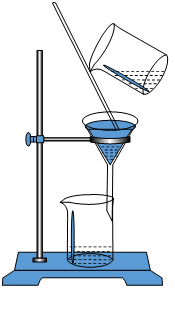
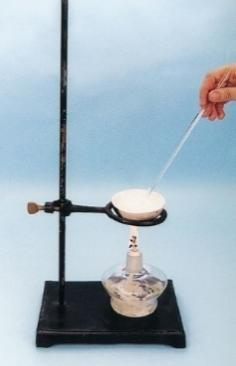
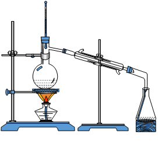
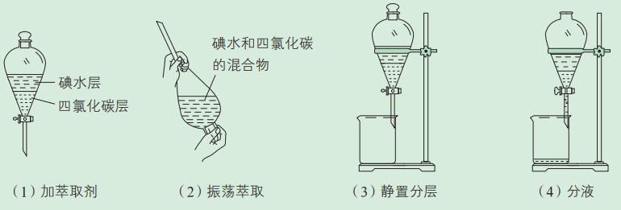
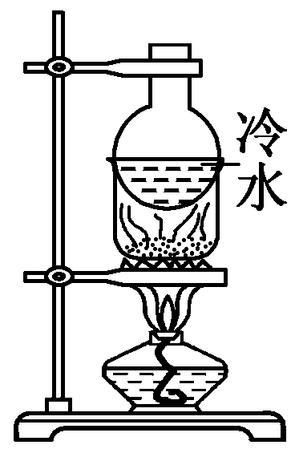
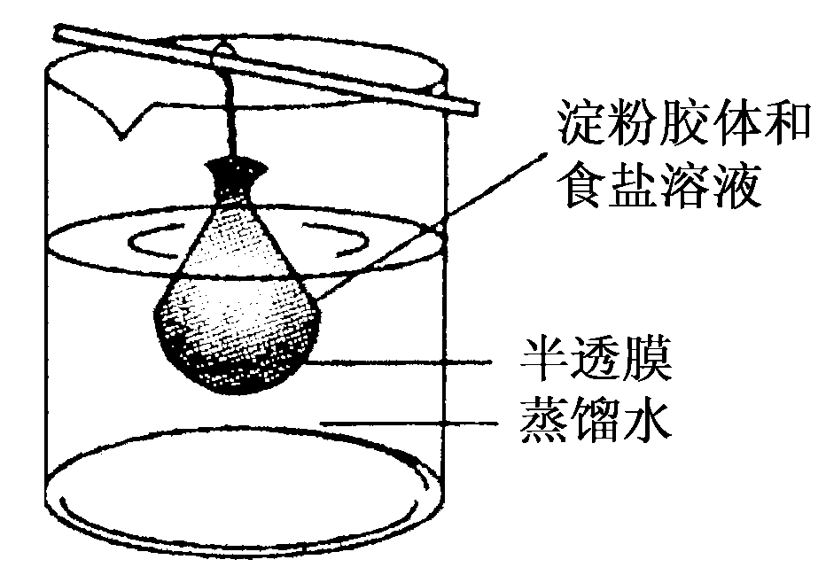
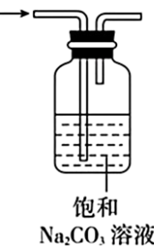

掌握分离提纯方法与装置，精准完成实验操作

核心原理：利用滤纸/滤网的孔隙大小，分离不溶性固体与液体
主要装置：漏斗、烧杯、玻璃棒、滤纸、铁架台（带铁圈）
操作要点：
适用场景：粗盐提纯、除去溶液中的泥沙等不溶性杂质

核心原理：加热使溶剂挥发，得到可溶性固体溶质
主要装置：蒸发皿、玻璃棒、酒精灯、铁架台（带铁圈）
操作要点：
适用场景：从食盐水提取NaCl晶体、蒸发浓缩溶液

核心原理：利用混合物中各组分沸点不同，分离互溶的液体混合物
主要装置：蒸馏烧瓶、冷凝管、酒精灯、温度计、锥形瓶、铁架台
操作要点：
适用场景：自来水制取蒸馏水、分离酒精和水的混合物

核心原理：利用溶质在互不相溶的溶剂中溶解度不同，提取溶质
主要装置：分液漏斗、烧杯、铁架台（带铁圈）
操作要点：
适用场景：用CCl₄萃取碘水中的碘、提取溴水中的溴

核心原理：利用某些物质受热直接由固态变为气态，冷却又凝华的性质分离
主要装置：烧杯、蒸发皿、酒精灯、铁架台、棉团
操作要点：
适用场景：分离碘与NaCl的混合物、提纯干冰

核心原理：利用半透膜的选择透过性，分离胶体与溶液中的小分子/离子
主要装置：半透膜袋、烧杯、玻璃棒
操作要点：
适用场景：提纯Fe(OH)₃胶体、除去淀粉胶体中的NaCl

核心原理：利用气体与洗液的反应/溶解差异，除去气体中的杂质
主要装置：洗气瓶（广口瓶/锥形瓶）、导管、橡胶塞
操作要点：
适用场景：用饱和食盐水除Cl₂中的HCl、用NaOH溶液除CO中的CO₂